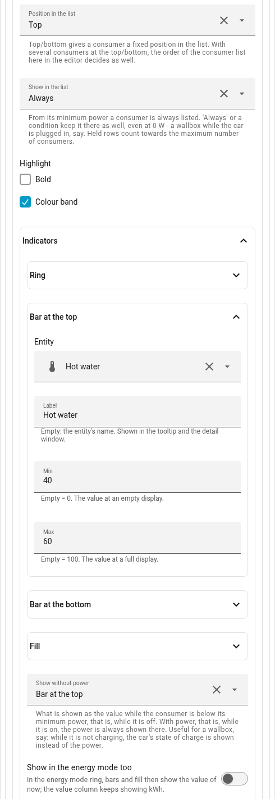
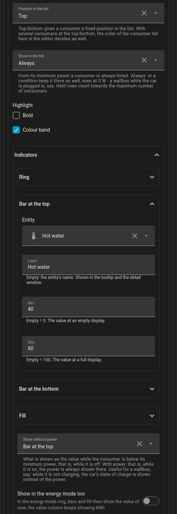
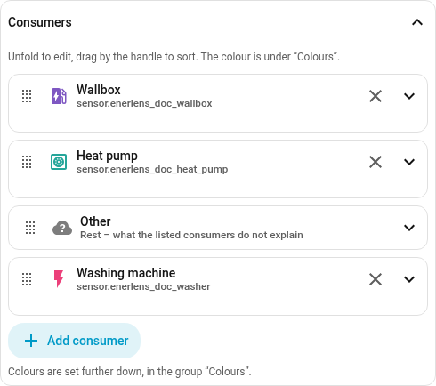
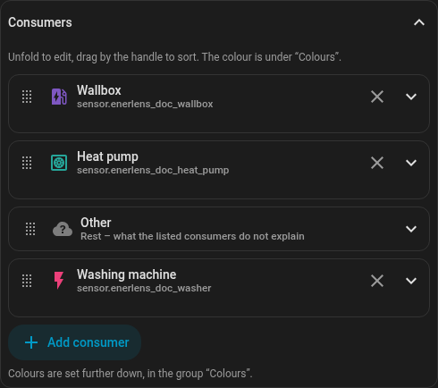
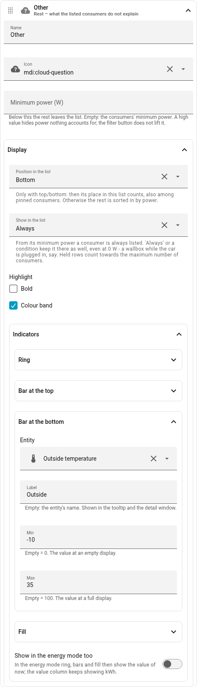
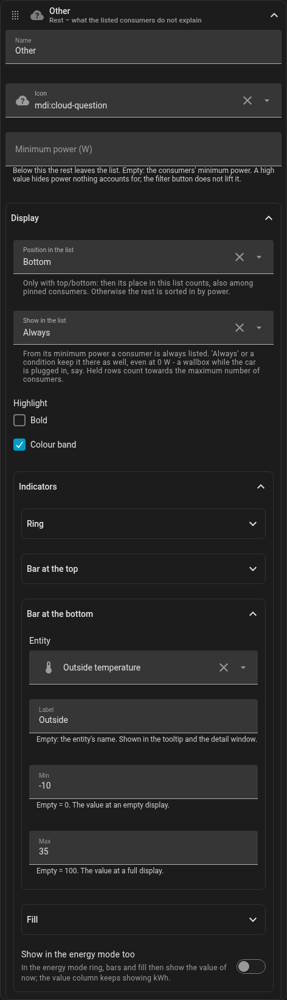

consumers:
- entity: sensor.wallbox_power
name: Wallbox
position: top # pinned to the top
show: always # always in the list
highlight: { bold: true, band: true }
indicators:
ring: { entity: sensor.car_battery_level }
idle_value: ring # without power: the charge
- entity: sensor.heat_pump_power
name: Heat pump
min_w: 40
show: always
indicators:
bar_top: { entity: sensor.hot_water, min: 40, max: 60, label: Hot water }
bar_bottom:
entity: sensor.flow_temperature
min: 20
max: 55
label: Flow
color: "#e53935" # a colour of its own
idle_value: bar_top # below 40 W: "52 °C"
- entity: sensor.heating_rod_power
name: Buffer tank
icon: mdi:water-boiler
indicators:
fill: { entity: sensor.buffer_charge, label: Charge }
- entity: sensor.printer_power
name: 3D printer
indicators:
bar_top: { entity: sensor.print_progress, label: Print progress }
- entity: sensor.washing_machine_power
position: bottom
highlight: { band: true }Extra values at the consumers
Like the nodes, every consumer in the list can show more than its power: a ring around its icon, a thin bar at the top or bottom of the row, an icon that fills. It can also be pinned to the top or bottom, kept in the list always or under a condition, and highlighted.
Watch: one round takes a minute and a half. The wallbox is pinned to the top and highlighted; while it does not charge it shows the car’s state of charge. The heat pump runs and rests - at rest the hot-water temperature stands in place of the power, its bars show hot water and flow. The buffer tank fills, the 3D printer shows its progress, the washing machine stands at the bottom.
Hover an icon or a bar with the mouse: its value shows with its label, such as "Hot water 52 °C" - in this demo too. A tap on the row opens Home Assistant’s window with the history of the power and of every extra value.
This is the YAML:
In the editor all of this is under the consumer’s Display; the colours of ring and bars under Colours. The heat pump of the example looks like this there - pinned to the top, with a colour band, hot water as the top bar:


Indicators
The ring is one of four indicators every consumer can have, one at a time or together, with no extra room in the row:
| Place | Look |
|---|---|
|
ring around the icon or colour dot |
|
thin bar at the top or bottom of the row, from the name to the value |
|
the colour dot fills from below; with an icon, a field behind it does |
Each place has an entity, a range min to max (0 to 100 by default) and
optionally a label; ring and bars have a colour of their own (in the editor
under Colours), the fill takes the consumer’s. One example is the hot-water
temperature of a heat pump:
consumers:
- entity: sensor.heat_pump_power
name: Heat pump
min_w: 40
show: always
indicators:
bar_top:
entity: sensor.hot_water_temperature
min: 40
max: 60
label: Hot water
idle_value: bar_top # below 40 W: "52 °C" instead of the powerValue column (idle_value): with power it shows the power. Below the row’s
minimum power (min_w, else min_consumer_w) it shows the chosen value, with
its unit, as Home Assistant shows it. The column switches on the list’s beat,
not with every reading.
Tooltip and tap: hover the icon or a bar for the value with its label; a tap on the row opens the window with the power and below it every value in a chart of its own.
Energy mode: the indicators are left out there, like the extra values at the
nodes. With in_energy: true they stay and show the value of now; the tooltip
then says "· now", the value column keeps showing kWh.
Older spellings: charge (with soc and label) means a ring from 0 to
100 % with idle_value: ring and in_energy: true; charge.show with
plugged and unplugged means show and condition. Both still work.
Changing the consumer in the editor writes it in the new form.
Pin, keep, highlight
This works for every consumer, not only the wallbox.
Position (position): top or bottom fixes the row at the top or bottom of
the list; several stand in the order of the configuration, sorted by dragging
in the editor. Without it the row sorts by power. The position only decides
the place, not whether the row appears.
Show in the list (show): from its minimum power a consumer is listed
anyway. always keeps it there at all times as well, condition only while
the condition is met - at 0 W too. No setting hides a consumer that draws
power.
Condition (condition): a sensor, an operator and a value. "=" and "!="
take one or more states ("is one of them" / "is none of them"), ">", "<",
">=" and "⇐" exactly one number, e.g. sensor.battery_voltage ">"
10.5. The operators are quoted in YAML. While the sensor is briefly
unavailable, its last answer counts. For more - a range, an attribute, two
conditions - build a helper in Home Assistant and use it as the sensor.
Maximum (max_consumers): held rows count and get their places first; the
strongest consumers fill the rest. If more rows are held than the maximum
allows, all held rows still appear - the editor then says that no other
consumer will.
Highlight (highlight): bold: true sets name and value in bold,
band: true lightly backs the row in the consumer’s colour; either on its own
or both, and no extra room.
In the energy mode position and always apply the same way; a condition
describes the state now and is not evaluated there.
The rest row
The rest is the house value minus the consumers shown. It can be set like a
consumer - with an entry type: rest instead of an entity in the consumer
list:
consumers:
- entity: sensor.wallbox_power
position: top
- type: rest
name: Other
icon: mdi:cloud-question
position: bottom
show: always
highlight: { band: true }
indicators:
bar_bottom: { entity: sensor.outside_temperature, min: -10, max: 35, label: Outside }
- entity: sensor.washing_machine_power
position: bottom- Name, icon, colour (
name,icon,color) as for a consumer. - Minimum power (
min_w): below it the rest disappears; without itmin_consumer_wapplies. The filter button does not lift it. - Position (
position):toporbottom. Among the pinned rows the place of the entry in the list counts - in the example the rest stands at the bottom, above the washing machine. Without a position it is sorted in by power. - Show in the list (
show: always): the rest stays below its minimum power too. Negative, or without a house value, it shows "—" instead of a figure. It does not count towards the maximum number of consumers. - Highlight and extra values as for a consumer - the extra values with any entity, e.g. the outside temperature.
Not for the rest: a condition and "Show without power"; it has no entity and no device threshold of its own.
In the editor the rest is an entry of its own in the consumer list, without a remove button, moved by dragging. Its colour is under Colours.




Older spelling: list.rest_label, icons.rest and colors.rest still apply.
Change the rest in the editor and it writes the entry type: rest, taking these
values along.